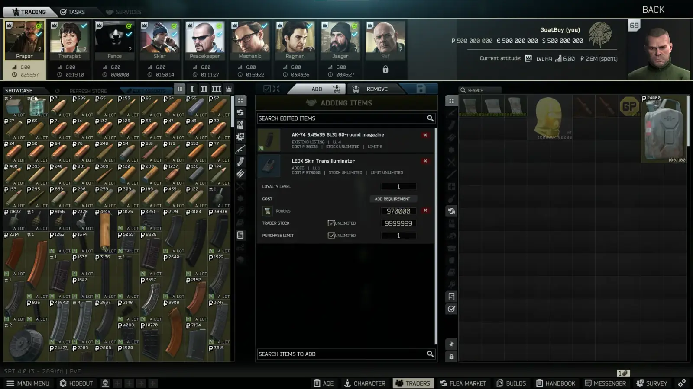
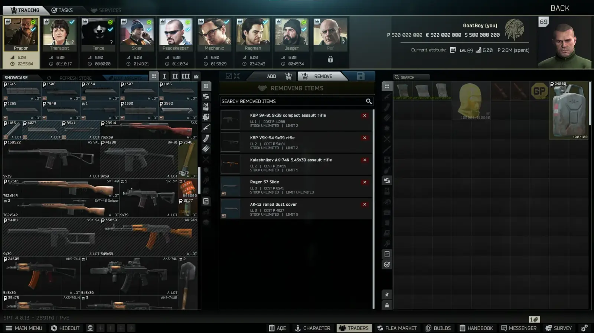
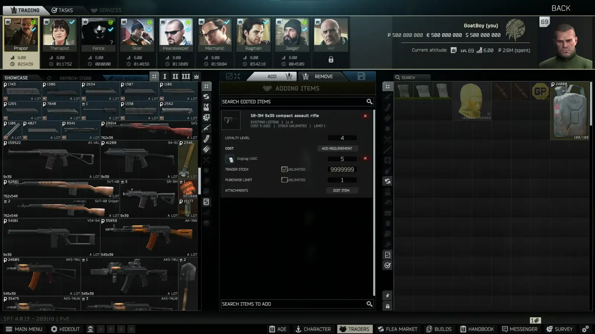
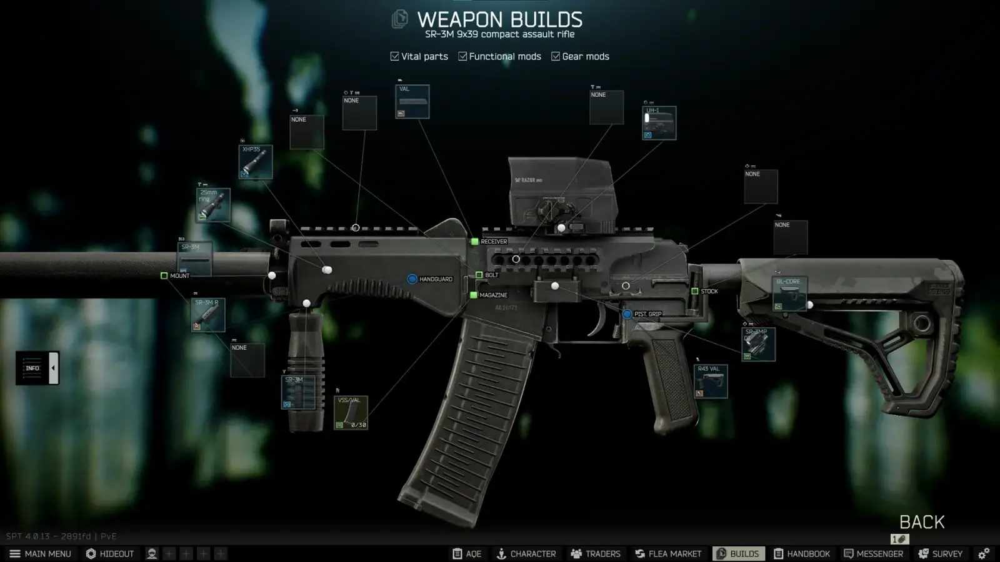
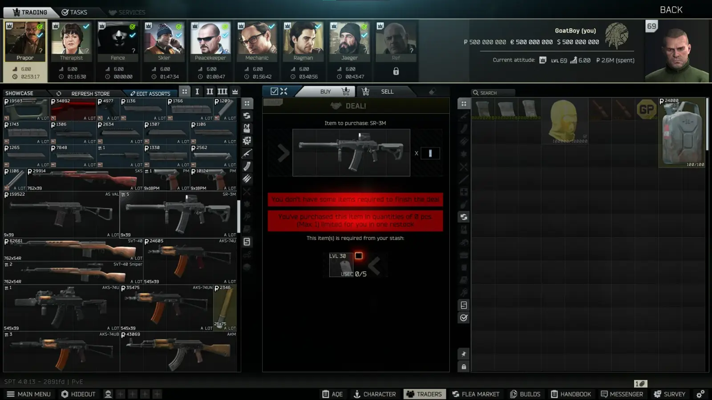

Mod
Ultimate Trader Assort Editor
- Downloads
- 565
- Favourites
- 11
- Mod lists
- 12
Ultimate Trader Assort Editor
Ultimate Trader Assort Editor is an in game trader assortment editor for SPT. It lets you add, remove, and edit trader listings directly from the trader screen.
The editor is built from cloned Tarkov UI elements and keeps its appearance and behavior close to the original in game UI.
Features
- Add items and weapon presets to trader assortments.
- Modify existing trader listings.
- Remove listings and restore previously removed listings.
- Change loyalty level requirements.
- Configure currency prices, multi-currency prices, and item barters.
- Change trader stock and per-profile purchase limits, including unlimited values.
- Edit supported weapons, armor, helmets, and their attachments.
- Supports modded items and custom traders.
- Refreshes trader stock and instantly shows offers on the flea market.
- Saves changes as JSON files that can be shared or manually edited.
- Loads multiple
add.jsonandremove.jsonedit packs for each trader to allow users to share their changes. - Allows the
EDIT ASSORTSbutton to be hidden through the F12 menu.
Installation
Drag the BepInEx and SPT folders directly into your SPT root install.
Showcase
    
Version
1.0.3
SPT 4.0.13
Fika: compatible
235 downloads133.5 KB
Fixed
- Fixed ammo boxes purchased from edited trader offers being empty when opened.
- Weapon durability max is no longer 100 if value is changed, such as min
60max80, result78.5/78.5.
VirusTotal: report 1
Version
1.0.2
SPT 4.0.13
Fika: unknown
191 downloads132.6 KB
Fixed
- Fixed GUID mismatch.
- Fixed scrolling issue while adding items.
Changes
- Added weapon durability controls for trader weapon listings.
- Added a full durability toggle, enabled by default.
- Added minimum and maximum durability fields that roll a random value for each purchased weapon.
VirusTotal: report 1
Version
1.0.1
SPT 4.0.13
Fika: unknown
98 downloads130.2 KB
Fixed
- Fixed loyalty level changes not allowing you to save.
- Fixed edited loyalty levels reverting to level 1 instead of being saved.
Changes
- Replaced the loyalty level text field with four native style selection buttons.
- Loyalty selectors now use each trader’s supported maximum level, including custom traders.
VirusTotal: report 1
Version
1.0.0
SPT 4.0.13
Fika: unknown
41 downloads129.4 KB
Initial release, please let me know if you run into any issues.
VirusTotal: report 1